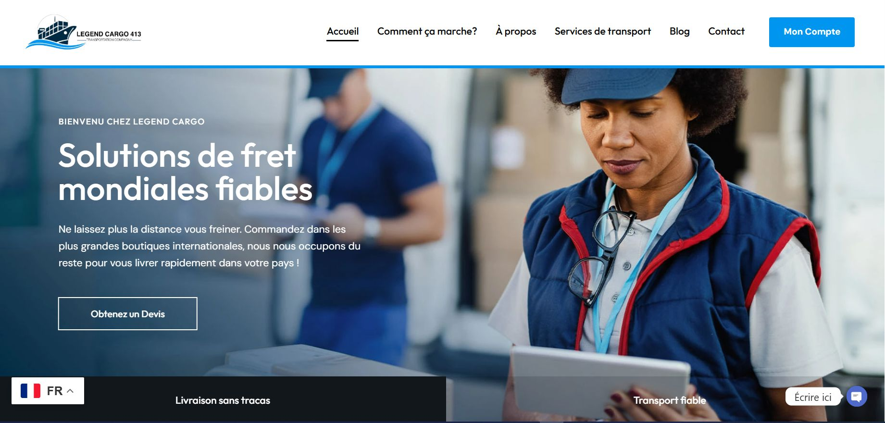

En ligne
Développement web
Plateforme de gestion des frets
Développement d'une plateforme dédiée à la gestion des opérations de fret entre la Chine et le Bénin, facilitant le suivi et la gestion des expéditions.